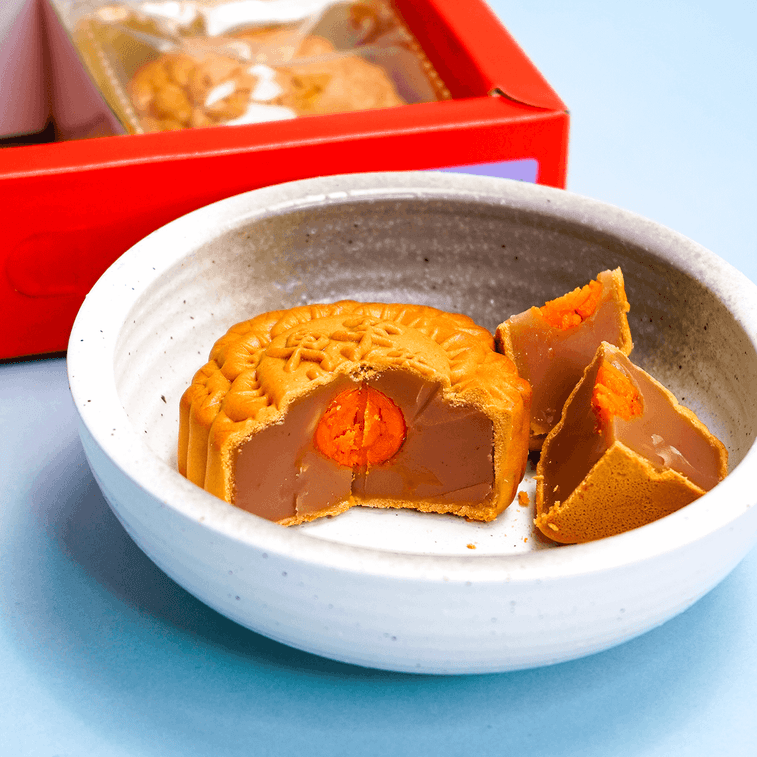

Description
Mooncake is a Chinese delicacy that is usually consumed during the Mid-Autumn festival. Learn how to prepare and make this graceful and delicious treat using our simple home recipe.
It is a culturally significant food and as such there are many variations in fillings and ways to make it. We've made it simple and broken down how to easily prepare this revered dessert in a few simple steps with a selection of tasty fillings to choose from.
If you would love to join in the tradition but don't know the Chinese customs or culture which surrounds mooncake; don't worry we've also got you covered. We hope you enjoy learning about (and eating) this little slice of mid-autumn!
Ingredients
- White lotus filling
- 4 salted duck egg yolks OR 4 raw salted duck eggs OR 4 raw duck eggs
- 1 cup Chinese baiju OR whiskey
- Salt
- Water
Steps
- To make salted duck eggs from scratch, wash the outside of the eggs before arranging them in the brining vessel. Cover them completely in water before pouring this water out into a pot. Set the eggs outside in the sun (during the early morning, not the late morning or afternoon) and let them sunbathe for 2-4 hours
- Using the ratio of ⅓ cup salt to every 1 kg of water, add salt to the water previously set aside and boil it. Once boiled, let it cool to room temperature. Let the brining vessel dry out completely.
- Add the liquor to a bowl and submerge the eggs for 1 hour. Then add the eggs to the dry brining vessel along with the liquor and the cooled salt water. Seal the vessel and let it rest for 30 days or more.
- After they have brined for a month, boil one egg in salt water. Cut them in half to check the yolk. If it is cured and hard, boil 3 other eggs and remove their yolks.
- Once cooked, they are now ready to be used to make Cantonese mooncake.